Measuring the performance of a classification model
Learning outcomes:
After completing this lesson you should be able to:
-
understand the essential metrics needed to evaluate different classification models
-
distinguish between metrics that are based on actual classes, and metrics that are concerned with predicted classes
-
understand the holistic metrics for classification.
In this section we will study how we can measure how accurate our classification model is. The concepts and ideas will be applied to a decision tree because this is the only classification technique we have covered so far, but the concepts and ideas are equally applicable regardless of the technique. Indeed, we will be utilising these metrics in later sections and units directly without explanation.
Measuring the effectiveness of a model is an essential skill, since we will often face problems that we can solve in several techniques. To objectively choose among them we need to compare their respective predictive models' capabilities and pick the one that suits best our problem. There is also the issue of picking the right metric for the problem in hand. Therefore, we will cover several metrics and we will learn which suits a specific problem, both in terms of the dataset structure and in terms of the aim of the analysis that we intend to perform in order to solve the problem in hand.
We will start by classification of a binary class problem, and we will generalise the measures for multi-class problems. However, please bear in mind that some metrics do not directly extend to a multi-class problem, and we will point this out whenever it is the case. But before seeing these metrics, we need to talk about why in the first place we might have imperfect performance.
In the following video, Abdulrahman talks through a comprehensive example of a decision tree with different metrics:
Measuring the performance of a binary class model
For a binary class problem, we have two classes that an instant can belong to. It can belong to class C1 or to class C2 but cannot belong to both at the same time. In fact, the question can be posed as whether an instant belongs to a one class of concern or not.
The classification would be effectively stating yes or 1 or + if the instant belongs to the main class of concern or stating no or 0 or – if the instant does not belong to the main class (which implicitly means it belongs to the complement of the class). We just have to be consistent in our approach. So in this context it is a binary choice, and it is useful to represent one of the classes as positive + and the other as negative –. Now, our classifier (our DT) mission is to predict whether an instant is of class + or class –. Therefore, we contrast what the classifier has predicted and what was the actual class of all instances to measure how good our classifier is. This can be done for the training set, the validation set or the testing set, all of which we have answers for (i.e. we know the classes for these sets). When we contrast the prediction against the actual class of each instant we have four possibilities:
- The actual class is + and the predicted class is + (True Positive-TP)
-
The actual class is – while the predicted class is + (False Positive-FP)
-
The actual class is + while the predicted class is – (False Negative-FN)
- The actual class is – and the predicted class is – (True Negative-TN)
These 4 cases can be better summarised in figure 2.46 below. This is called the confusion matrix because the white boxes represent the cases confused by the prediction model, while the blue boxes represent the cases where the predictions of the model are aligned with the reality. The aim of any model is to reduce the cases in the white boxes and make them as close to 0 as possible. We can actually do a lot with these counts, and below we show several metrics that can be defined based on them.
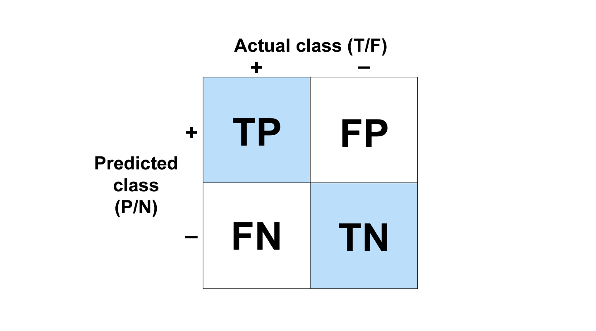
Info
Be mindful that some sources present the confusion matrix using the transpose of the above matrix (with actual classes on the left and the predicted classes on top) as in figure 2.47 below. This will not change anything but the presentation. RapidMiner and Weka for example use the first form, while Tan et al (2020) uses the second form. We will adopt the first form as it is more common. Note that FP is called type I error, while FN is called type II error, accordingly it makes more sense to present the matrix in the first form.
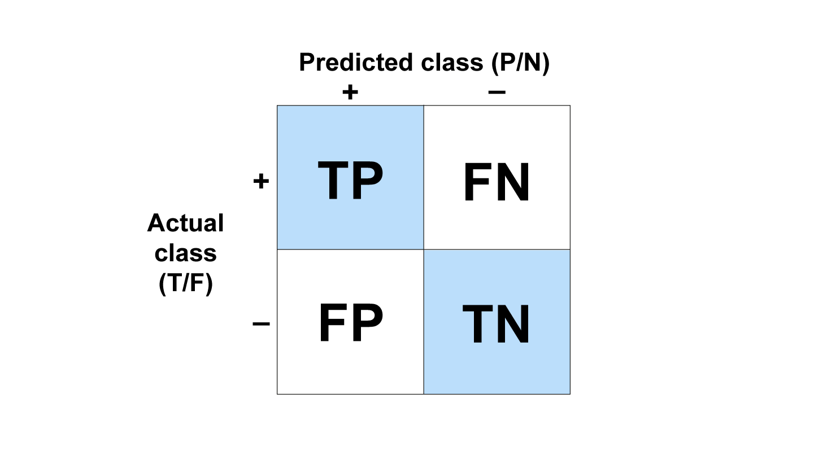
Note that the total number of instances is the sum of all of the numbers in the boxes of the confusion matrix:
This is regardless of the distribution of the correctly and incorrectly classified instances.
We define the Accuracy of a classifier as the rate of correctly classified instances out of the total number of instances:
On the other hand, we define the Error rate as the rate of the incorrectly classified instances out of the total number of instances:
All classifiers try to increase its accuracy or equivalently reduce its error rate. However, in some special cases these metrics do not reflect how good the model is. For example, if the classes are not balanced, the accuracy can be misleading. We will study these cases and more suitable measures for them in unit 4.
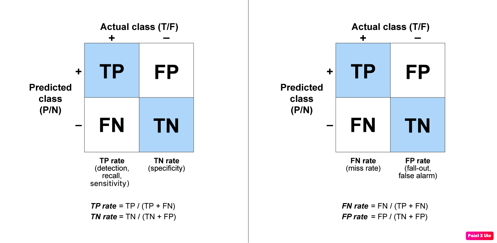
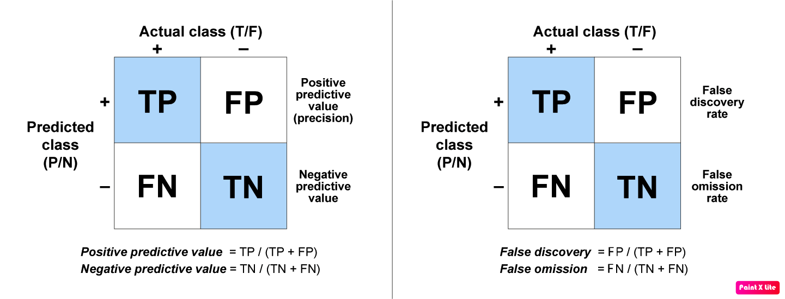
As it can be seen, all possible ways of taking the rate of either of the four values in the confusion matrix is covered and has its own properties. Of particular interest is the precision and the recall (aka positive prediction value and true positive rate, respectively). When we talk about precision, we are referring to the precision of the prediction of our classifier with respect to the positive class. The recall, on the other hand, measures how good our classifier in detecting the positive actual cases is.
If we are less concerned with false positives then we can use the hit rate (aka recall) to choose between two models. If we are diagnosing cancer for example, then misdiagnosing people as having cancer is preferred over missing those who actually have cancer (given that there would be further checking to confirm the positive cases). In this case if we have to choose between two models with the same accuracy, but with different hit rates then we choose the one with the higher hit rate. We note however that these names are a bit confusing and some simplification and uniformity is needed in order to reveal their intrinsic properties and the relationship between each other. Therefore, we propose to rename them for consistency and uniformity as in the below figures. Note that these are our own naming and some coincide with the metrics names in the literature and some do not.
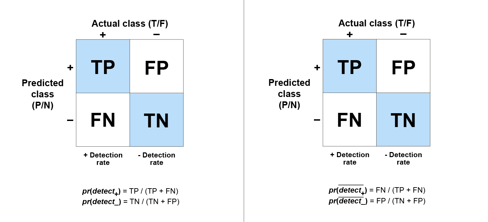
Additional information
The bar on top represents a complement of an event in a probabilistic sense. The true positive detection rate is denoted as \(p\left(\right.\) detect \(\left._{+}\right)\) and it represents the probability of correctly detecting positive instances by the model. Similarly, the true negative detection rate is denoted as \(p\left(\right.\) detect \(\left._{-}\right)\). It represents the probability of correctly detecting negative instances by the model.
On the other hand, the false positive detection rate is denoted \(p\left(\overline{\text { detect }}_{+}\right)\) and it represents the probability of incorrectly detecting positive instances by the model. While, the false negative detection rate is denoted \(p\left(\overline{\text { detect }}_{-}\right)\) and represents the probability of incorrectly detecting negative instances by the model.
We can now easily verify that:
The names are meant to reflect the inner relationship between the different metrics. To see why, we first note that \(¬ TP = FN, ¬ TN=FP\), where we use \(¬\) to denote the logical not. Now, if we negate both sides of the positive detection rate equation: \(\neg\left(\right.\) Detect \(\left._{+}=T P /(T P+F N)\right)\) we get \(\neg\) Detect \(_{+}=F N /(F N+T P)=\overline{\text { Detect }}_{+}\).
Similarly, if we negate both sides of the negative detection rate equation: \(\neg\left(\right.\) Detect \(\left._{-}=T N /(F P+T N)\right)\) we get \(\neg\) Detect \(_{-}=F P /(T N+F P)=\overline{\text { Detect }}\).
In other words, \(\overline{\text { Detect }}_{+}\) \(\overline{\text { Detect }}_{-}\) represents the model inability to detect the positive and negative instances, respectively.
Similar argument is used for the prediction related metrics. The true positive prediction value is denoted as \(p\left(\right.\) predict \(\left._{+}\right)\) and represents the probability of correctly predicting positive instances by the model. The true negative prediction value is denoted as \(p(\) predict_ \()\) and represents the probability of correctly predicting negative instances by the model. On the other hand, the false positive prediction value is denoted \(p\left(\overline{\text { predict }}_{+}\right)\), it represents the probability of incorrectly predicting positive instances by the model. While, the false negative prediction value is denoted \(p\left(\overline{\text { predict }}_{-}\right)\), it represents the probability of incorrectly predicting negative instances by the model.
We can now easily verify that:
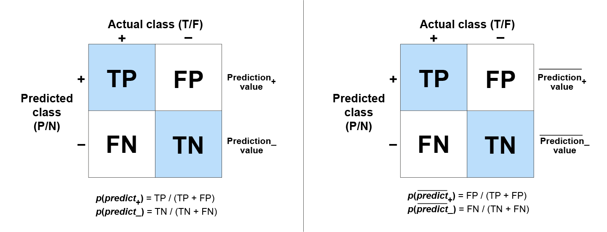
Negation on the prediction metrics yields similar but not quite the same relationship as for the detection metrics. This is because if we negate both sides of the positive prediction value equation: \(\neg\left(\right.\) Predict \(\left._{+}=T P /(T P+F P)\right)\) we get \(\neg\) Predict \(_{+}=F N /(F N+T N)=\overline{\text { Predict }}_{-}\).
Similarly, if we negate both sides of the negative prediction value equation: \(\neg\left(\right.\) Predict \(\left._{-}=T N /(T N+F N)\right)\) we get \(\neg\) Predict \(_{-}=F P /(F P+T P)=\overline{\text { Predict }}_{+}\). Note that the negation here changed also the prediction metric form positive to negative.
Note that we used capital initial for the metrics to express them as a rate, while we uses small letter when we place them in the context of probabilities, so for example \(\overline{\text { Predict }}_{-}=p\left(\overline{\text { Predict }}_{-}\right),\) Predict \(_{+}=p\left(\right.\) predict \(\left._{+}\right)\) and so on.
Which type of metric is more important?
Note that predictive metrics are concerned with the model ability to predict or guess the correct class of the instances, while detective metrics are concerned with the model ability to detect or recognise the correct class of the instances. In particular, detective metrics are discriminative ones by nature since we can interpret it as if we are giving the model a set of positive only (or negative only) instances without revealing the class to the model and ask the model if it can tell us which one of these are positive (or which ones are negative). The answer should be all positive (or all negative) and the more the model diverges from this answer the less discriminative it is.
On the other hand, predictive metrics are speculative by nature since we can interpret them as if we are giving the model a set of mixed class instances and we ask it to come up with a guess or prediction on the class. So, predictive metrics may appear (due to its name) to pertain more for a prediction problem. However this is not the case; both the detective and predictive metrics give different insights of the quality of the classification model. The question is, can we come up with metrics that encompass both types of measures? The answer is 'yes'.
Holistic metrics
Holistic metrics are those metrics that look at both horizontal and vertical views and involve both positive and negative classes. These are better metrics for model comparison of most problems when we are concerned with an overall good performance without a particular preference of guessing ability or discrimination ability of the model. Among these holistic metrics are the F1 score and Matthew Correlation Coefficient. The F1 score is defined as the harmonic mean of the precision and recall. Harmonic means differs from the usual arithmetic mean. The harmonic mean for \(n\) numbers \(x_{i}\) is defined as the reciprocal of the arithmetic mean of the reciprocals of the given numbers: \(\left(\frac{\sum_{i=1}^{k} x_{i}^{-1}}{k}\right)^{-1}\).
Therefore, for two numbers it is defined as \(\left(\frac{1 / x_{1}+1 / x_{2}}{2}\right)^{-1}=\frac{2 x_{1} x_{2}}{x_{1}+x_{2}}\)
Therefore, F1 score is given as \(F 1\) score \(=\frac{2 p\left(p r e d i c t_{+}\right) p\left(d e t e c t_{+}\right)}{p\left(p r e d i c t_{+}\right)+p\left(d e t e c t_{+}\right)}=\frac{\text { 2TP }}{2TP \text { }+\text { FP }+\text { FN }}\)
Note
Note that \(𝑨𝒄𝒄𝒖𝒓𝒂𝒄𝒚=(𝐓𝐏+𝐓𝐍)/N =(𝐓𝐏+𝐓𝐍)/(𝐓𝐏+ 𝐓𝐍+ 𝐅𝐏+ 𝐅𝐍)\). If we compare this with the F1 score formula, we realise that we can obtain F1 score directly from the accuracy formula, by replacing the term \(TN\) with \(TP\). In other words, we can view the F1 score from another perspective as being a measure of overall accuracy for the true positive predicted cases only (no true negative).
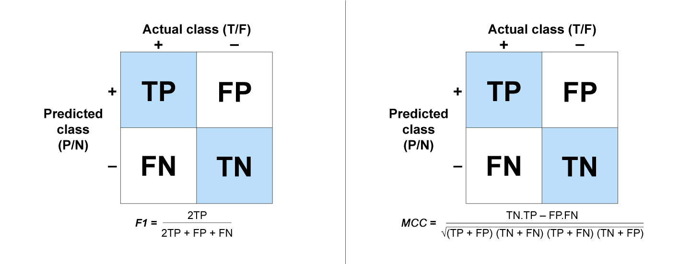
Note
The Matthew correlation coefficient (MCC) is defined as:
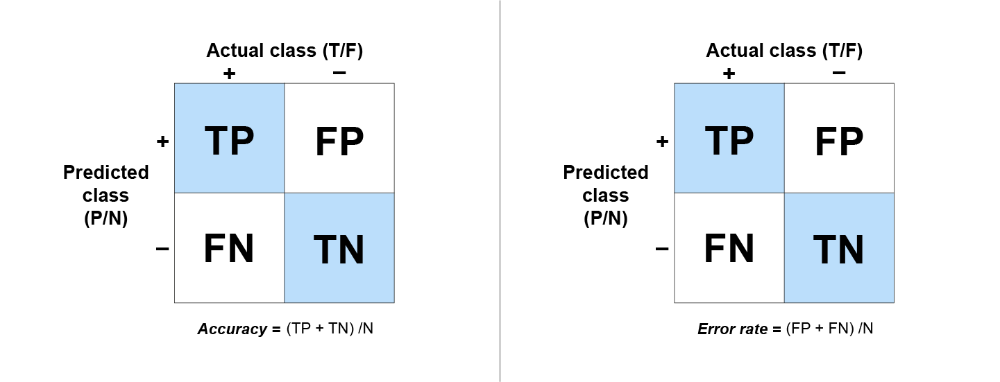
The range of MCC is between -1 and 1. -1 represents total disagreement between the model predictions and the actual classes, 1 represents total agreement between the predicted and actual classes and 0 means no correlation, i.e. the model is not better than a random guess.
In terms of comparison, we can meaningfully compare as follows:
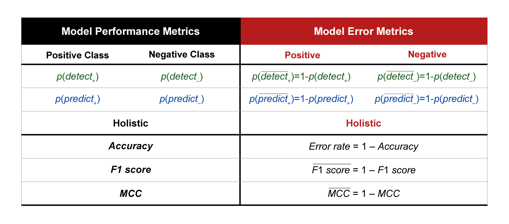
As can be seen we either compare using the left-hand side for performance or the right-hand side for errors. We do not need to use both, and we must be aware not to mingle the left with right when we compare different models' performance.
Examples of metrics for a classifier
Let us now have a look at some examples. Let us assume that we trained a decision tree classifier and it gave us the confusion matrix that can be seen below. We have stated all the metrics that we have covered so far and we demonstrated the calculations in a separate box underneath. Later we might just state the metrics values without the calculations.
By comparing the Accuracy (or F1 score or MCC) we accordingly prefer classifier 4.
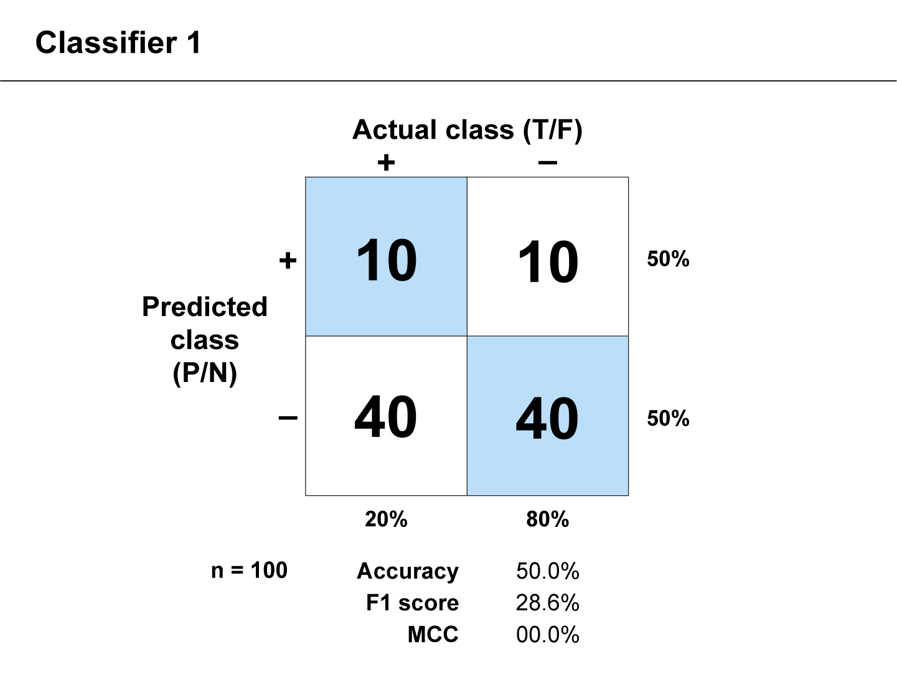
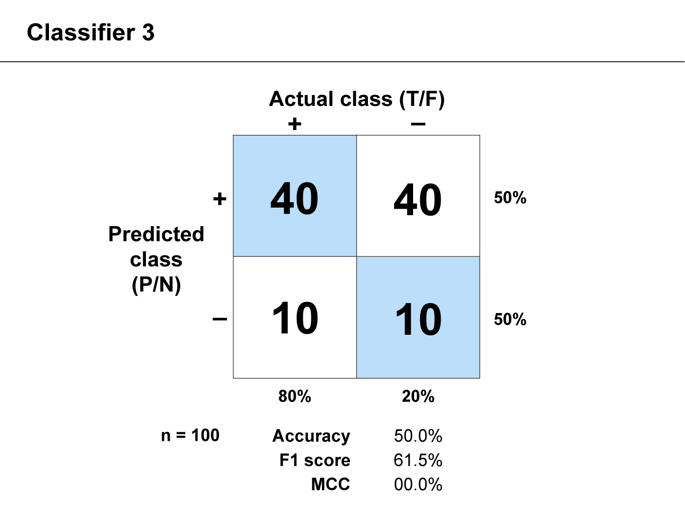
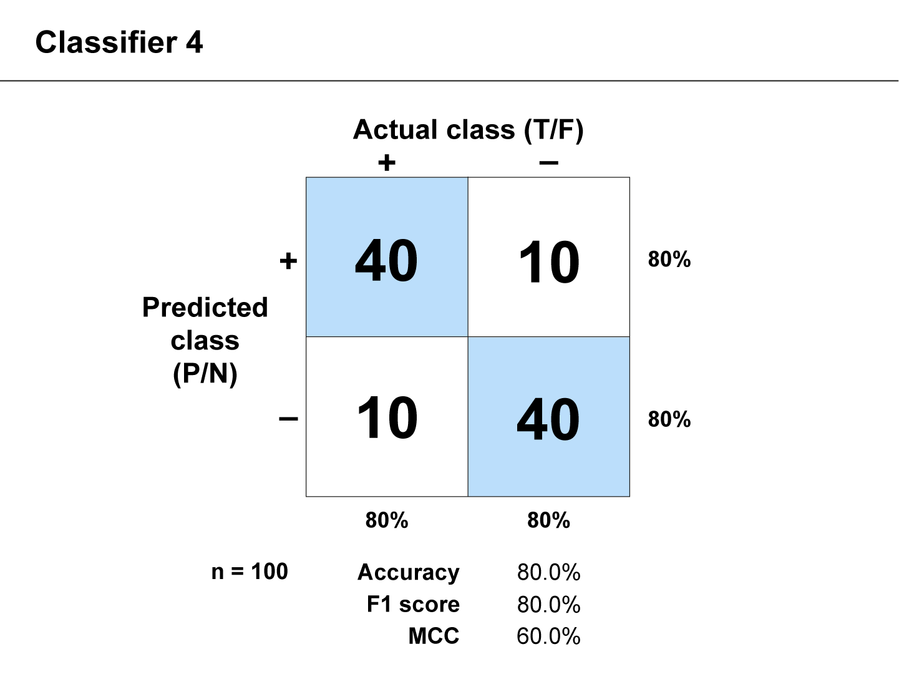
Examples of metrics on classifiers comparison
Let us now assume that we trained a further two classifiers that produced the following two confusion matrices. Comparing the classifiers we can see how the different metrics react to the changes in the way the instances has been classified. In particular we can see that F1 score reflect a balanced estimation of the quality of the classifier, while accuracy can be quite optimistic in its estimation of the quality of the classifier. MCC is the more reserved of holistic metrics and it tends to be more pessimistic in its estimation.
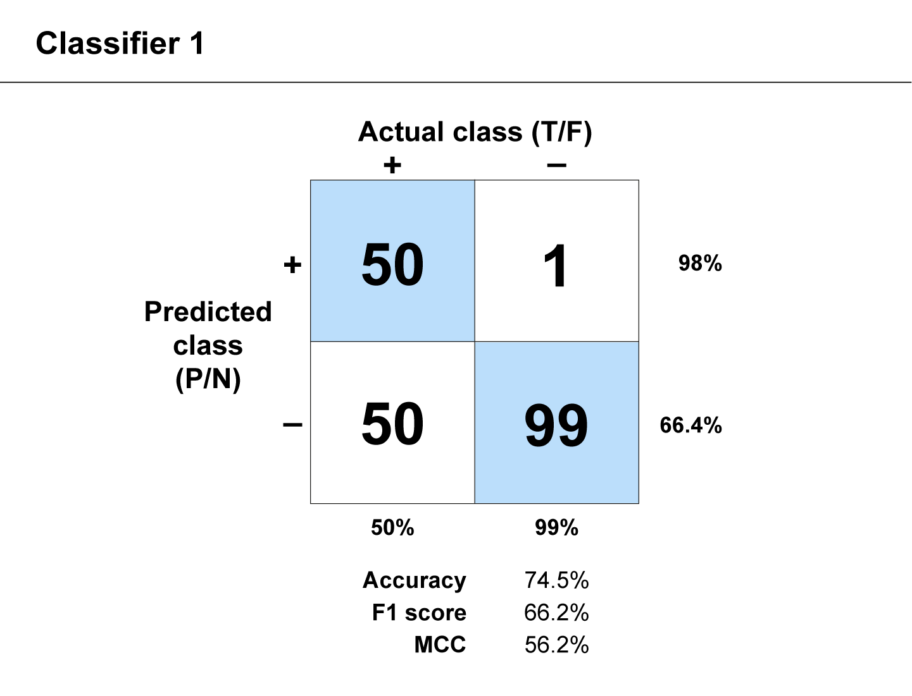
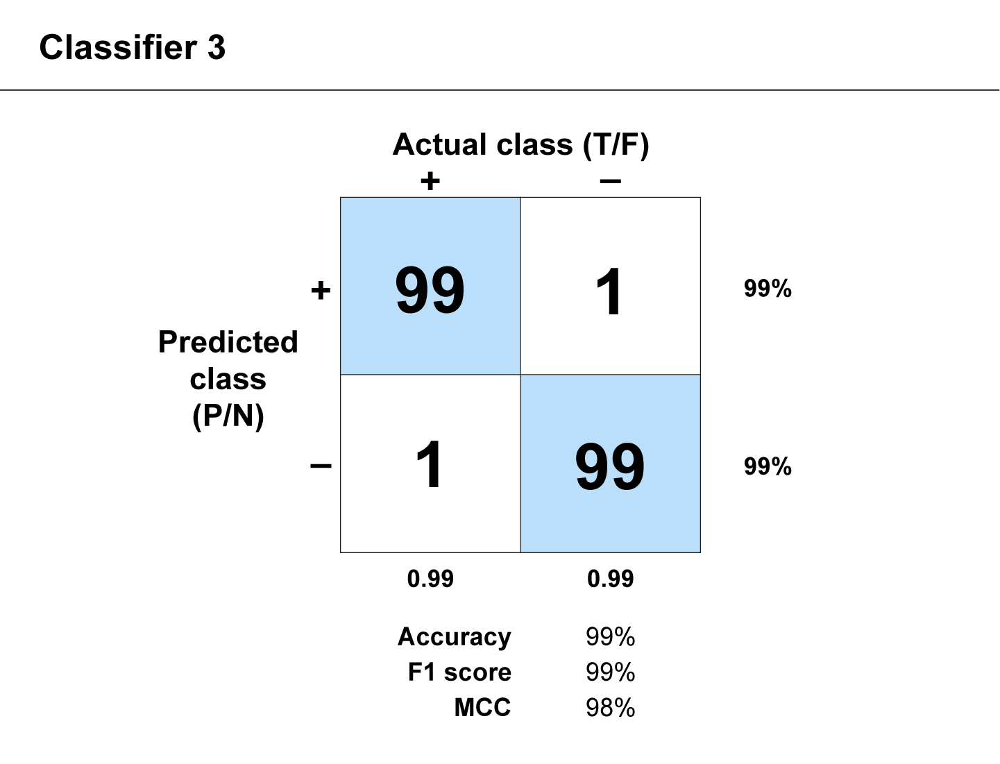
Accordingly we prefer classifier 3 since we are comparing on the same dataset. Please refer to section 3.9 of Introduction to Data Mining (Tan et al, 2019) for a more detailed discussion of model comparison. In particular, the reader needs to be careful on what constitutes a statistically significant difference of two different models.
Classes imbalance and metrics
Let us now see how these metrics react to an increase in one of the classes, i.e. when the problem has imbalanced classes issue.x
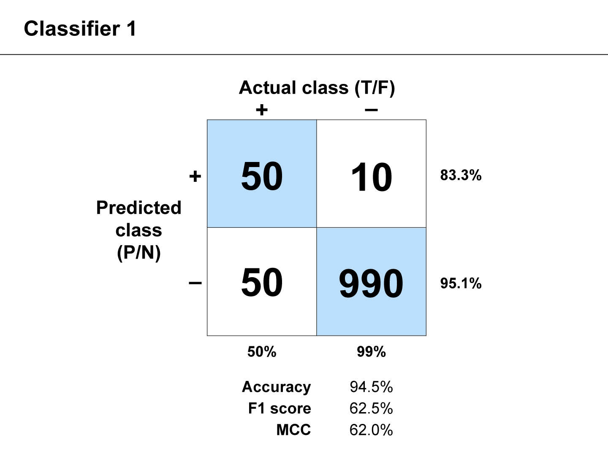
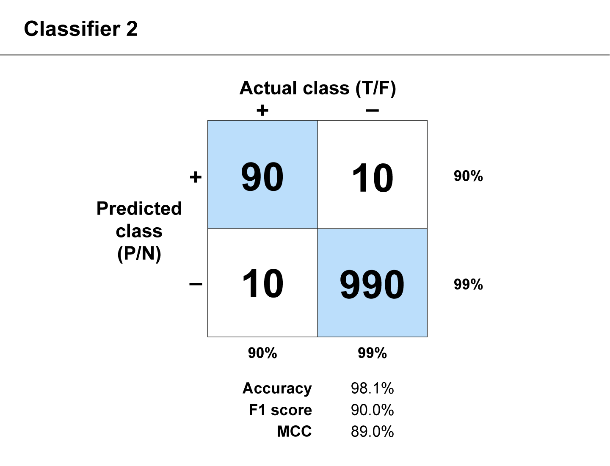
Ok now let us see how the metrics react when the problem has a rare class. i.e. it is a severe imbalanced classes problem.
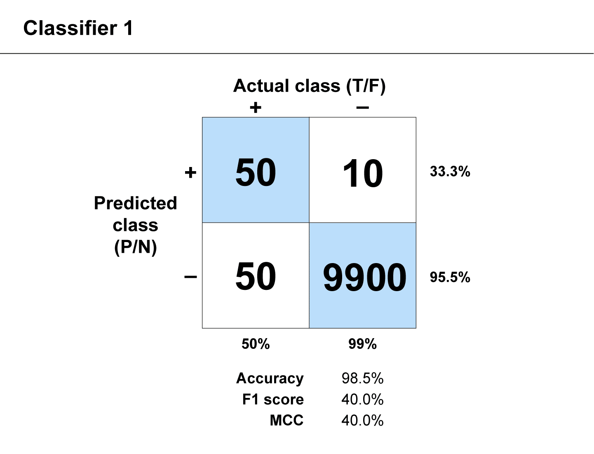
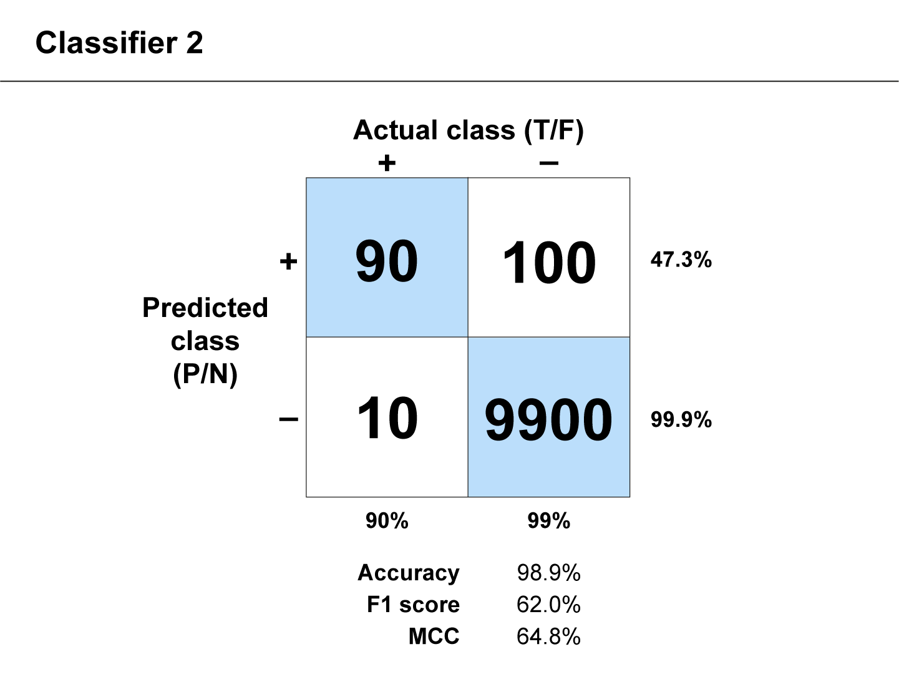
Measuring the performance of a multi-class model
Generalising the accuracy from binary-class to multi-class problems is straightforward. We just have to take all the diagonal counts of the confusion matrix and then we divide by the total. Let us take a look at an example.
Below we show the confusion matrix for the IRIS dataset. For more information about the IRIS dataset read the following passage extracted from SKLearn description for the dataset.
Iris plants dataset
Data Set Characteristics:
- Number of Instances: 150 (50 in each of three classes)
- Number of Attributes: 4 numeric, predictive attributes and the class
- Attribute Information:
- sepal length in cm
- sepal width in cm
- petal length in cm
- petal width in cm
- class:
- Iris-Setosa
- Iris-Versicolour
- Iris-Virginica
Summary Statistics:
| Attribute | Min | Max | Mean | SD | Class Correlation |
|---|---|---|---|---|---|
| sepal length: | 4.3 | 7.9 | 5.84 | 0.83 | 0.7826 |
| sepal width: | 2.0 | 4.4 | 3.05 | 0.43 | -0.4194 |
| petal length: | 1.0 | 6.9 | 3.76 | 1.76 | 0.9490 (high!) |
| petal width: | 0.1 | 2.5 | 1.20 | 0.76 | 0.9565 (high!) |
| - Missing Attribute Values: None | |||||
| - Class Distribution: 33.3% for each of 3 classes. | |||||
| - Creator: R.A. Fisher | |||||
| - Donor: Michael Marshall (MARSHALL%PLU@io.arc.nasa.gov) | |||||
| - Date: July, 1988 |
Description:
The famous Iris database, first used by Sir R.A. Fisher. The dataset is taken from Fisher's paper. Note that it's the same as in R, but not as in the UCI Machine Learning Repository, which has two wrong data points. This is perhaps the best known database to be found in the pattern recognition literature. Fisher's paper is a classic in the field and is referenced frequently to this day. (See Duda & Hart, for example.) The data set contains 3 classes of 50 instances each, where each class refers to a type of iris plant. One class is linearly separable from the other 2; the latter are NOT linearly separable from each other.
Note that the true labels are placed horizontally while the prediction is vertically. This is opposite to what we have used before, but as we said earlier it should not matter as long as we are vigilant about it.
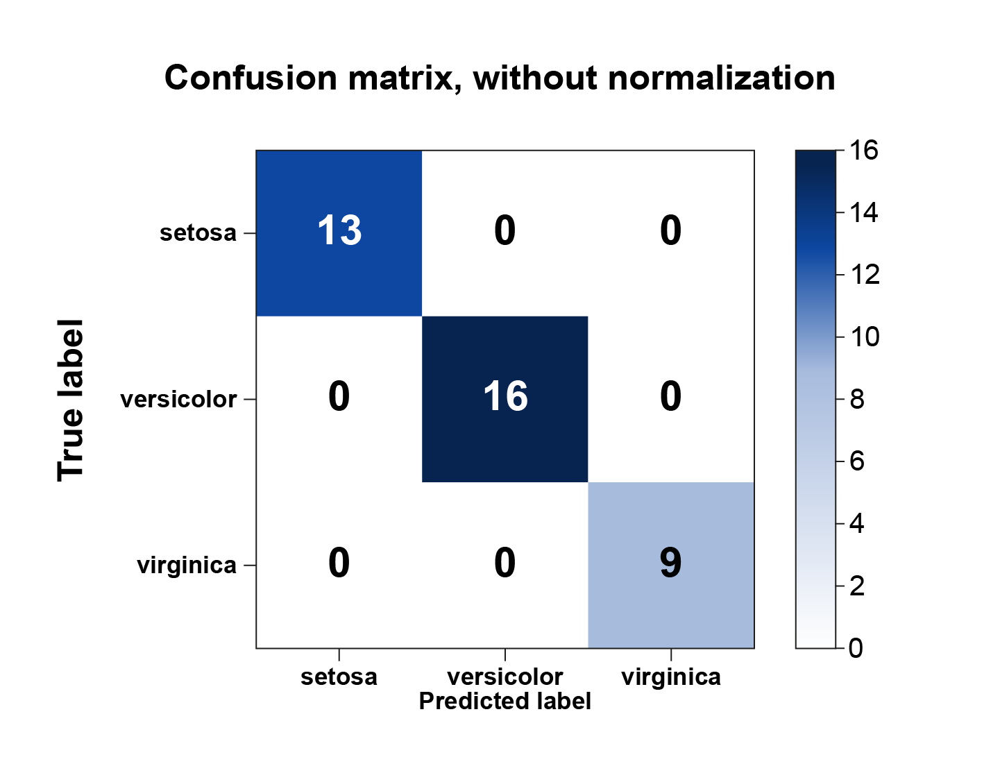
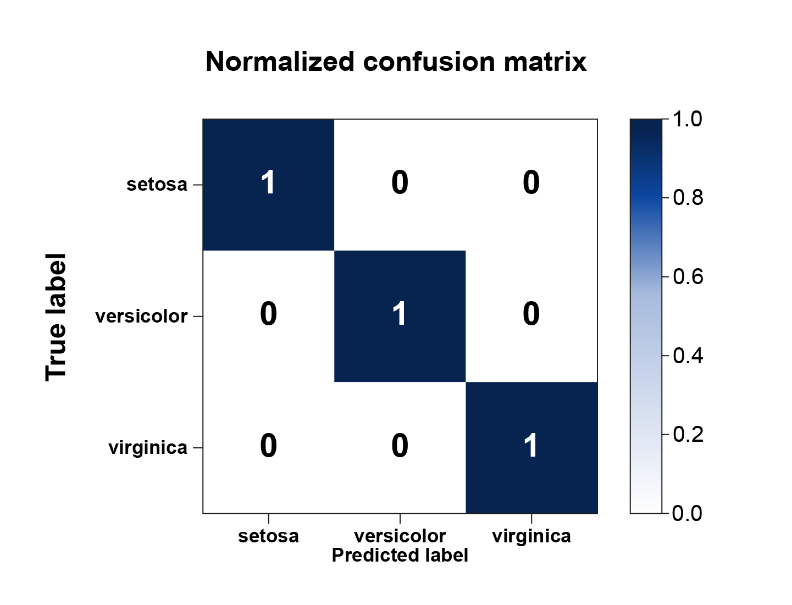
Different sources use these two formats as well. In figure 2.67 you can see the same confusion matrix after normalization. We normalize by dividing each entry by the sum along the true label axis. Below you will see an example that clarifies this.
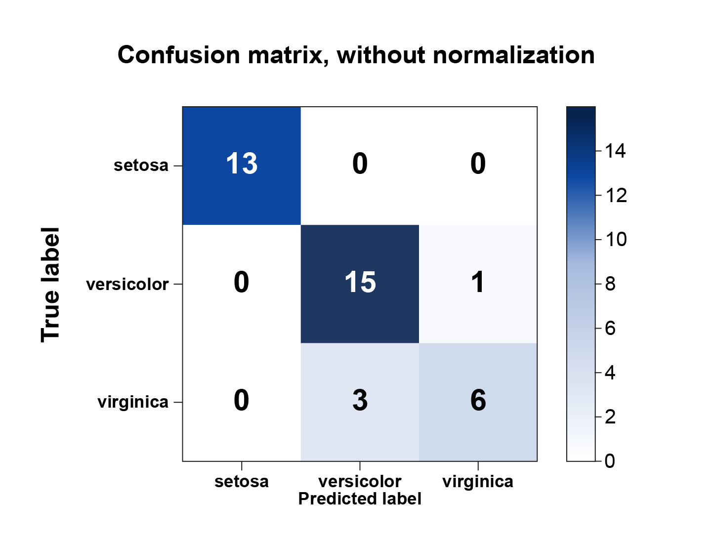
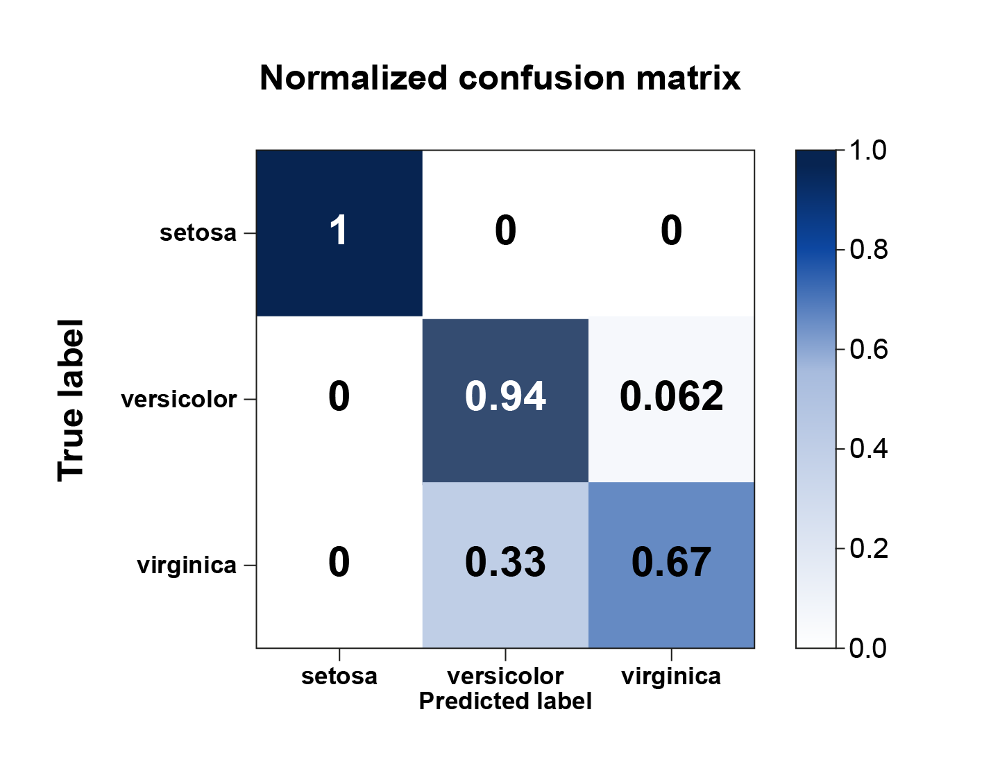
The accuracy for a binary classification problem is given as:
The accuracy for a multi-class problem is given as:
Where \(\mathrm{TC}_{i}\) represents the count of the correctly classified instances of class \(\mathrm{C}_{i}\).
So for example the accuracy of a classification model that have the above confusion matrix when applied on the iris dataset is given as:
Accuracy limitation
One issue that we face with the accuracy of multi-class and binary-class is that it favours the dominant class with more instances. For example, in the iris confusion matrix the count for the virginica is only 9, while for the versicolor it is 16. This means that the performance of the model on the versicolor class will overshadow and dominate its performance on the virginica. Sometimes this is desirable if we want the performance measure to be consistent with the dataset class distribution.
Other times, when we are more interested in a balanced score of all classes regardless of their distributions, or when we want to emphasise the importance of a rare class due to a difficulty in detecting it, then the accuracy is not suitable. In these cases, balanced scores are preferred. In the next two subsections we will talk about the detect and predict scores for multi-class problems (aka recall and precision scores, respectively). These are balanced scores that are more suitable to imbalanced class datasets. In fact the detect score is also known as the balanced accuracy score.
Holistic metric for multi-class: \(pr(detect)\) (aka recall score or balanced accuracy score)
Balancing out the detection scores (recall scores) of different classes can be performed in few ways. Essentially we calculate the detection rate (recall) of the model for individual classes and then we can either:
-
Take the arithmetic mean of these rates (and, in this case, each class has equal weight, even if the class has low probability)
-
Take a weighted average of the detections rates. This will allow us to assign different weights for the different classes, the weights must sum up to 1 and reflect the relative importance that we want to assign to each class.
- If we assign the class distributions to the weights for the detection rates then we go back to the usual accuracy score.
For multi-class problems, the recall or \(\text { pr(detect } \left._{\text {class }}\right)\) can be defined in terms of averaged sum of true instances of each class. To demonstrate how, let us look into the above confusion matrix. The recall for each class separately give us the following:
Which yields 1.0,0.9375 and 0.666 for the classes 'setosa' 'versicolor' 'virginica', respectively and these are the scores that we can see on the normalized confusion matrix after rounding to 2 decimals. Now, the recall for the above model can be calculated in several ways, some of them are:
-
Macro detect score (aka recall score or balanced accuracy) \(p(\text { detect })=\frac{1}{3}\left(p\left(\text { detect }_{\text {setosa }}\right)+p\left(\text { detect }_{\text {versicolor }}\right)+p\left(\text { detect }_{\text {virginica }}\right)\right)=0.868\) This is just arithmetic average which will assume that all classes the same importance.
-
Weighted detect score (aka weighted recall score or weighted balanced accuracy). For example if we decided that the relative importance of the classes are as follows: \(w_{\text {setosa }}=1 / 4, w_{\text {versicolor }}=1 / 4, w_{\text {virginica }}=1 / 2\)
Then the weighted detection score (or balanced accuracy score) is given as:
\(p(\) detect \()=\frac{1}{4} p\left(\right.\) detect \(\left._{\text {setosa }}\right)+\frac{1}{4} p\left(\right.\) detect \(\left._{\text {versicolor }}\right)+\frac{1}{2} p\left(\right.\) detect \(\left._{\text {virginica }}\right)\)
\(p(\) detect \()=\frac{1}{4} \times 1+\frac{1}{4} \times 0.9375+\frac{1}{2} \times 0.666=0.8177\)
This metric shows that the classifier that we trained has less weighted accuracy than the balanced accuracy since we emphasised the detection of the virginica more than other classes and the model did not perform that well on this particular class \(\left(\boldsymbol{p}\left(\text { detect }_{\text {virginica }}\right)=0.666\right)\).
Now, let us try to use the classes’ distribution as the weights for the classes’ detection scores to see where this can lead us. The count that we have is \(n=13+16+9=38\) for 'setosa' 'versicolor' 'virginica' classes, respectively. This is not the count of the entire dataset \(N=150\) because the above confusion matrix is for a testing set, not the total dataset.
The weights for the classes are:
Hence, the balanced accuracy is:
The detection probabilities are as follows:
\(p\left(\right.\) detect \(\left._{\text {setosa }}\right)=\frac{13}{13}, \quad p\left(\right.\) detect \(\left._{\text {versicolor }}\right)=\frac{15}{16}, \quad p\left(\right.\) detect \(\left._{\text {virginica }}\right)=\frac{6}{9}\)
\(p(\) detect \()=\frac{1}{38}\left(13 \frac{13}{13}+16 \frac{15}{16}+9 \frac{6}{9}\right)=\frac{1}{39}(13+15+6)=0.8947\)
Which means that choosing the classes’ distribution as the weights for a weighted balanced accuracy brings us back to the usual accuracy measure.
Here we would like to point out that the macro balanced accuracy for a binary class's problem is defined as:
A weighted average version can be defined as we showed earlier.
Exercise
Try to calculate the balanced accuracy for the above problems and compare it with the accuracy and see if makes any difference.
Holistic metric for multi-class: \(p(predict)\) (aka precision score)
All calculations for \(pr(predict)\) (aka precision) extends naturally similar to what we did for the \(pr(detect)\) (aka recall). As before we can calculate the precision for each class as follows:
Which yields 1, 0.8333, 0.857 for the classes 'setosa' 'versicolor' 'virginica', respectively.
-
Macro prediction score (aka macro precision score) is given as \(p(\) predict \()=\frac{1}{3}\left(p\left(\right.\right.\) predict \(\left._{\text {setosa }}\right)+p\left(\right.\) predict \(\left._{\text {versicolor }}\right)+p\left(\right.\) predict \(\left.\left._{\text {virginica }}\right)\right)=0.8968\)
-
Weighted
The count for the respective classes are \(n=13+16+9=38\), the weights for the classes are: \(w_{\text {setosa }}=13 / 38 w_{\text {versicolor }}=16 / 38, w_{\text {virginica }}=9 / 38\). Hence, the prediction score (aka the precision score is given as:
\(p(\) predict \()=\frac{1}{38}\left(13 p\left(\right.\right.\) predict \(\left._{\text {setosa }}\right)+16 p\left(\right.\) predict \(\left._{\text {versicolor }}\right)+9 p\left(\right.\) predict \(\left.\left._{\text {virginica }}\right)\right)\) \(\quad=\frac{1}{38}\left(13 \times \frac{13}{13}+16 \times \frac{15}{18}+9 \times \frac{6}{7}\right)=0.8959\)
Note here that we cannot use the counts on the diagonal of the confusion matrix as in \(pr(detect)\) and we are not back to some other basic measures as in the detect case.
Holistic metric for multi-class: F1 Score
To generalise the F1 score into multi-class problem we can:
-
Either use overall predict and detect scores (recall and precision) and then we apply the harmonic mean on them as in the binary class problem. Here we can use either the macro detect and predict scores or the weighted detect and predict scores.
-
Or we can also treat the classes as one vs. the rest fashion (yielding the problem into a binary class problem) and obtain the F1 score for each class separately. And then we take the average of the F1 scores for all the classes. Again we can use either the macro or the weighted method consistently (do not mix macro with weighted for different classes).
We will show the first method here (however note that 2 is preferred over 1, see next exercise). In the last couple of sections we saw that the overall macro detection and precision for the given examples are:
\(p(\) predict \()=0.8968, p(\) detect \()=0.868\)
So, the harmonic average:
So we can see that the value for the F1 score lies between the \(p\)( predict ) and \(p(\) detect \()\).
Note, there is a yet another approach that we have not shown which is the micro detect and micro predict and F score all of which yield the accuracy and hence are omitted. Note that for binary class problems, we only take the harmonic mean of the \(p\left(\right.\) detect \(\left._{+}\right)\) and \(p\left(\right.\) predict \(\left._{+}\right)\) for all the classes.
Please note also that method macro are special cases of weighted measures (macro and weighted F1 score and macro and weighted predict and detect scores) where the weights are all \(=1 / C\) (the number of classes). On the other hand, 1 and 2 are two different forms for F1 score and are not necessarily equivalent.
Exercise
Extend the F1 score, as per the second method, into a multi-class case and calculate it for the above example. See the following paper by Optiz and Burst that compares the two different methods and see the following paper by Grandini et al to see how to calculate F1 according to the second preferred method. In practice you might want to consider both (1 and 2) and compare or at least use 2.
Lesson summary
In this lesson we have covered various metrics for binary and multiclass problems to evaluate classification models in general.
Please note that these metrics are not necessarily related only to decision trees. They are general metrics that can be used for any classification model. In later units we will see different classification techniques, and these metrics will also be applicable to them. Please be aware that we have used a unified and simple notation for the metrics, but these have different names in the wider community and you should be aware of these names. We denoted precision as predict, and recall as detect.